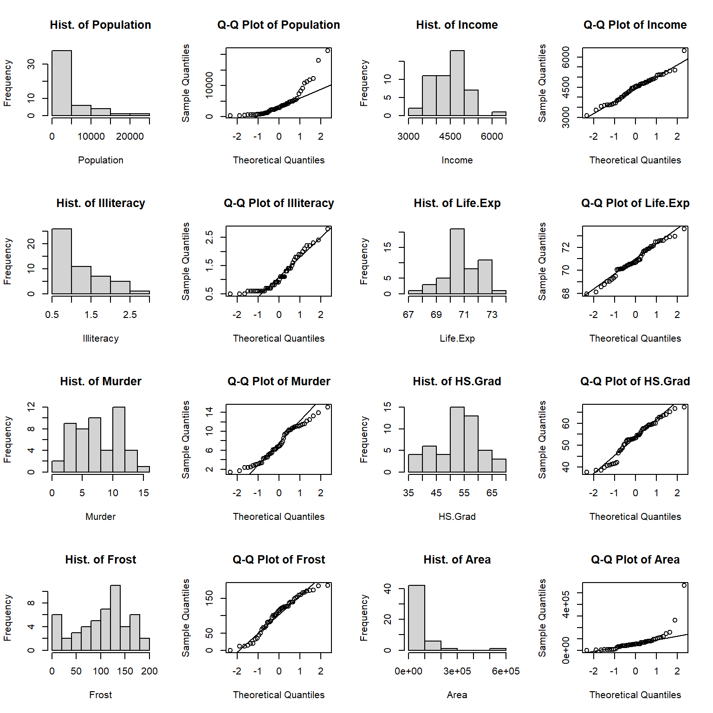

Chapter 8 Exploring of state data set
8.1 Reading in and manipulating data
The state data sets include state information in early years around 1970s. We pick state.abb, state.x77, and state.region to form our data file. The detail information is listed here.
state.abb: vector with 2-letter abbreviations for the state names.
state.x77: matrix with 50 rows and 8 columns giving the following statistics in the respective columns.
Population: population estimate as of July 1, 1975
Income: per capita income (1974)
Illiteracy: illiteracy (1970, percent of population)
Life Exp: life expectancy in years (1969-71)
Murder: murder and non-negligent manslaughter rate per 100,000 population (1976)
HS Grad: percent high-school graduates (1970)
Frost: mean number of days with minimum temperature below freezing (1931-1960) in capital or large city
Area: land area in square miles
state.region: factor giving the region (Northeast, South, North Central, West) that each state belongs to.
First we merge these three data sets to get data frame “sta” with 10 columns and 50 rows, and take a look of the data.
tem <- data.frame(state.x77) # transform matrix into data frame
sta <- cbind(state.abb, tem, state.region)
colnames(sta)[1] <- "State"
colnames(sta)[10] <- "Region"
head(sta)## State Population Income Illiteracy Life.Exp Murder HS.Grad
## Alabama AL 3615 3624 2.1 69.05 15.1 41.3
## Alaska AK 365 6315 1.5 69.31 11.3 66.7
## Arizona AZ 2212 4530 1.8 70.55 7.8 58.1
## Arkansas AR 2110 3378 1.9 70.66 10.1 39.9
## California CA 21198 5114 1.1 71.71 10.3 62.6
## Colorado CO 2541 4884 0.7 72.06 6.8 63.9
## Frost Area Region
## Alabama 20 50708 South
## Alaska 152 566432 West
## Arizona 15 113417 West
## Arkansas 65 51945 South
## California 20 156361 West
## Colorado 166 103766 Weststr(sta)## 'data.frame': 50 obs. of 10 variables:
## $ State : Factor w/ 50 levels "AK","AL","AR",..: 2 1 4 3 5 6 7 8 9 10 ...
## $ Population: num 3615 365 2212 2110 21198 ...
## $ Income : num 3624 6315 4530 3378 5114 ...
## $ Illiteracy: num 2.1 1.5 1.8 1.9 1.1 0.7 1.1 0.9 1.3 2 ...
## $ Life.Exp : num 69 69.3 70.5 70.7 71.7 ...
## $ Murder : num 15.1 11.3 7.8 10.1 10.3 6.8 3.1 6.2 10.7 13.9 ...
## $ HS.Grad : num 41.3 66.7 58.1 39.9 62.6 63.9 56 54.6 52.6 40.6 ...
## $ Frost : num 20 152 15 65 20 166 139 103 11 60 ...
## $ Area : num 50708 566432 113417 51945 156361 ...
## $ Region : Factor w/ 4 levels "Northeast","South",..: 2 4 4 2 4 4 1 2 2 2 ...summary(sta)## State Population Income Illiteracy
## AK : 1 Min. : 365 Min. :3098 Min. :0.500
## AL : 1 1st Qu.: 1080 1st Qu.:3993 1st Qu.:0.625
## AR : 1 Median : 2838 Median :4519 Median :0.950
## AZ : 1 Mean : 4246 Mean :4436 Mean :1.170
## CA : 1 3rd Qu.: 4968 3rd Qu.:4814 3rd Qu.:1.575
## CO : 1 Max. :21198 Max. :6315 Max. :2.800
## (Other):44
## Life.Exp Murder HS.Grad Frost
## Min. :67.96 Min. : 1.400 Min. :37.80 Min. : 0.00
## 1st Qu.:70.12 1st Qu.: 4.350 1st Qu.:48.05 1st Qu.: 66.25
## Median :70.67 Median : 6.850 Median :53.25 Median :114.50
## Mean :70.88 Mean : 7.378 Mean :53.11 Mean :104.46
## 3rd Qu.:71.89 3rd Qu.:10.675 3rd Qu.:59.15 3rd Qu.:139.75
## Max. :73.60 Max. :15.100 Max. :67.30 Max. :188.00
##
## Area Region
## Min. : 1049 Northeast : 9
## 1st Qu.: 36985 South :16
## Median : 54277 North Central:12
## Mean : 70736 West :13
## 3rd Qu.: 81163
## Max. :566432
## 8.2 Basic information about data
Now let’s see whether the numeric variables are normally distributed or not.
library(dplyr)
a <- colnames(sta)[2:9] # pick up the numeric columns according to the names
par(mfrow = c(4, 4)) # layout in 4 rows and 4 columns
for (i in 1:length(a)){
sub = sta[a[i]][,1]
hist(sub, main = paste("Hist. of", a[i], sep = " "), xlab = a[i])
qqnorm(sub, main = paste("Q-Q Plot of", a[i], sep = " "))
qqline(sub)
if (i == 1) {s.t <- shapiro.test(sub)
} else {s.t <- rbind(s.t, shapiro.test(sub))
}
}
s.t <- s.t[, 1:2]
mode(s.t) = "numeric" # show shapiro.test result as numeric
s.t <- round(data.frame(s.t), 3) # round to decimal 3
s.t$data.name <- a
s.t## statistic p.value data.name
## s.t 0.770 0.000 Population
## X 0.977 0.430 Income
## X.1 0.883 0.000 Illiteracy
## X.2 0.977 0.442 Life.Exp
## X.3 0.953 0.047 Murder
## X.4 0.953 0.046 HS.Grad
## X.5 0.955 0.053 Frost
## X.6 0.572 0.000 AreaFrom the histograms and QQplots we can see that the distribution of Population, Illiteracy and Area skewed to the left. Income and Life.Exp distributed close to normal. The shapiro tests show that Income, Life.Exp and Frost are normally distributed with p value greater than 0.05, while Murder and HS.Grad are almost normally distributed with p value really close to 0.05. There is no evidence that Population, Illiteracy and Area have normal distribution.
As for the categorical variable region, here is the region information including the count and percentage of states.
counts <- sort(table(sta$Region), decreasing = TRUE)
percentages <- 100 * counts / length(sta$Region)
barplot(percentages, ylab = "Percentage", col = "lightblue")
text(x=seq(0.7, 5, 1.2), 2, paste("n=", counts))
Bar plot tells us that we have relatively more states in South(16) and less states in Northeast(9). North Central and West have similar number of states(12 and 13).
If we want to know whether the populations in California and New York are more than the other states like what we have in now days, or the population of South Dakota comparing with other states, we use Lollipop plot to show the population of all states.
library(ggplot2)
ggplot(sta, aes(x = State, y = Population)) +
geom_point(size = 3) +
geom_segment(aes(x = State, xend = State, y = 0, yend = Population)) +
labs(title = "Lollipop Chart for Population") +
theme(plot.title = element_text(hjust = 0.5), axis.text.x = element_text(angle = 65, vjust = 0.6))
From the plot we can see even in early days, California and New York are the top two states in population. South Dakota have little population even in 1970s.
Other questions we may have are: how about the murder rate distribution in early days? Is it the same for different states and different regions? What are the main effect factors to murder rate? Can we use model to explain the murder rate?
library(maps)## Warning: package 'maps' was built under R version 3.5.2sta$region <- tolower(state.name) # create new character vector with lowercase states names
states <- map_data("state") # extract state data
map <- merge(states, sta, by = "region", all.x = T) # merge states and state.x77 data
map <- map[order(map$order), ]
ggplot(map, aes(x = long, y = lat, group = group)) +
geom_polygon(aes(fill = Murder)) +
geom_path() +
scale_fill_gradientn(colours = rev(heat.colors(10))) +
coord_map() +
labs(title = "Map of Murder Rate", x = "Longitude", y = "Latitude") +
guides(fill = guide_legend(title = "Murder Rate")) +
theme(plot.title = element_text(hjust = 0.5))
We can see from the map that the bottom and right of the map are close to red while the top middle and left are yellow. There is an area on top-right are yellow too. The map tells us that murder rate are higher in south and east states but less in north central, northwest and northeast states.
library(ggridges)## Warning: package 'ggridges' was built under R version 3.5.2ggplot(sta, aes(x = Murder, y = Region, fill = Region)) +
geom_density_ridges() +
theme_ridges() +
labs(title = "Ridgeline plot of Murder") +
theme(legend.position = "none", plot.title = element_text(hjust = 0.5),
axis.title.x = element_text(hjust = 0.5), axis.title.y = element_text(hjust = 0.5))
The ridgeline plot tells us that murder rate skewed to the left for region west, northeast and north central, but skewed to the right for region south, which confirm with map above that south has big murder rate than other regions.
8.3 Analyzing the relationship among variables
st <- sta[, 2:9] #take numeric variables as goal matrix
library(ellipse)
library(corrplot)## Warning: package 'corrplot' was built under R version 3.5.2corMatrix <- cor(as.matrix(st)) # correlation matrix
col <- colorRampPalette(c("#7F0000", "red", "#FF7F00", "yellow", "#7FFF7F",
"cyan", "#007FFF", "blue", "#00007F"))
corrplot.mixed(corMatrix, order = "AOE", lower = "number", lower.col = "black",
number.cex = .8, upper = "ellipse", upper.col = col(10),
diag = "u", tl.pos = "lt", tl.col = "black")
On the top-right of correlation figure we can see the red and narrow shape between Murder and Life.Exp which shows high negative correlation, the blue narrow shape between Murder and Illiteracy which shows high positive correlation, the red-orange narrow shape between Murder and Frost, HS.Grad which show median negative correlation, also the orange shape between Murder and Income which shows small negative correlation and light-blue shape between Murder and both Area and Population which show small positive correlation.
The pearson and spearman correlation matrix on the bottom-left gives us the r values between each pair of the variables, which confirm the correlation shape on the top-right.
Positive correlation between Murder and Illiteracy with r value of 0.70, which means the lower education level the state have, the higher murder rate chance it will happen in that state; Negative correlations between Murder and Life.Exp, Frost, with r value of -0.78, and -0.54 illustrate that the more occurrence of murder, the shorter life expectation the state will have; And the colder of the weather, the lower chance the murder will occur: too cold to murder?!
Now let’s see the cluster situation of these variables.
plot(hclust(as.dist(1 - cor(as.matrix(st))))) # hierarchical clustering
The cluster Dendrogram tells us that there are two clusters for these variables. Murder is mostly close to Illiteracy, and then to Population and Area. Similar situation, HS.Grad is mostly close to Income, and then to Life.Exp and Frost. Though illiteracy and HS.Grad are in different cluster, we know for the same state, illiteracy is highly correlated with high school graduation rate , the lower the illiteracy, the higher the high school graduation rate. r value of -0.66 between Illiteracy and HS.Grad in the corrplot tells the same story.
we can use density plot to see the distribution of Illiteracy by region.
ggplot(sta, aes(x = Illiteracy, fill = Region)) + geom_density(alpha = 0.3)
Figure 8.1: Illiteracy distribution among Region
We can see that north central region has narrow density distribution with most Illiteracy less than 1 percent of population. While south region has an open distribution with illiteracy covered from 0.5 to 3, and most south states have illiteracy between 1.5 and 2.2. Though region west has a spread out distribution too, but it’s left skewed, which means there are still lots of west states with illiteracy less than 1% of population. Most northeast region states have illiteracy less then 1.5% of population.
Because of the relationship of Murder with both Population and Area, We add one more column of Pop.Density for the population per square miles of area to see the correlation between Murder and this density.
sta$Pop.Density <- sta$Population/sta$Area
boxplot(sta$Pop.Density ~ sta$Region)
model <- aov(sta$Pop.Density ~ sta$Region, sta)
summary(model)## Df Sum Sq Mean Sq F value Pr(>F)
## sta$Region 3 1.051 0.3502 12 6.3e-06 ***
## Residuals 46 1.343 0.0292
## ---
## Signif. codes: 0 '***' 0.001 '**' 0.01 '*' 0.05 '.' 0.1 ' ' 1The box plot shows that Pop.Density of Northeast is much more than the other regions, while West has lowest Pop.Density. ANOVA test with p value of 6.3e-06 also let us reject the null hypothesis that mean Pop.Densities are same for different regions, which means at least one of the regional population densities is different from the others.
Here is the scatterplot for Illiteracy and Murder with Population per area.
ggplot(sta, aes(x = Illiteracy, y = Murder)) +
geom_point(aes(size = Pop.Density, color = Region)) +
geom_smooth(method = 'lm',formula = y ~ x) + # add regression line
labs(title = "Scatterplot for Illiteracy and Murder with Population per area") +
theme(plot.title = element_text(hjust = 0.5))
The plot shows that murder and illiteracy are positive correlated. All states in other three regions have murder rate less than 12 per 100,000 population except some of south states have murder over 12 per 100,000 population. All north central states(red) has illiteracy less than 1, all northeast states have less than 1.5 of illiteracy. The illiteracy of west and south states have much bigger variance. More Northeast states have big population density but middle illiteracy rate comparing with the states in the other three regions.
Because of the high correlation of murder and Life.Exp, we will take a look of the distribution of Life.Exp.
ggplot(sta, aes(x = Region, y = Life.Exp, fill = Region)) +
geom_violin(trim=FALSE) +
geom_boxplot(width=0.1) +
labs(title = 'Life.Exp distribution by Region') +
theme(plot.title = element_text(hjust = 0.5))
On average, south has lower life expectancy than the other three regions. North Central has highest Life.Exp, while West has spread out distribution with two long tails on each ends, which means some west states have really long life expectancy, while some states expect short life though they are in the same region.
Here is the plot for murder with the information of variables in the other cluster. According to the corrplot, we believe they affect the murder rate too, more or less.
# group income into IncomeType first
sta.income <- sta %>% mutate(IncomeType = factor(ifelse(Income < 3500, "Under3500",
ifelse(Income < 4000 & Income >= 3500, "3500-4000",
ifelse(Income < 4500 & Income >= 4000, "4000-4500",
ifelse(Income < 5000 & Income >= 4500, "4500-5000",
"Above5000"))))))
ggplot(sta.income, aes(x = Murder, y = Life.Exp)) +
geom_point(aes(shape = IncomeType, color = Region, size = HS.Grad)) +
geom_smooth(method = 'lm',formula = y ~ x) +
labs(title = "Murder Vs Life.Exp with HS.Grad and IncomeType by region") +
theme(plot.title = element_text(hjust = 0.5))
Murder is negatively correlated with Life.Exp. Some states with higher murder rate over 12 have relatively small symbols, which means their high school graduation rates are as less as 40%; And these small symbols with murder rate bigger than 12 are all colored as green, which means they all belong to south region.
It looks like the income type does not affect the murder rate a lot because all different symbols scatter around in different murder rates, especially between murder rate 8 and 10.
Most southern states has lower HS.Grad high, low Life.Exp but higher murder frequency, while states in other three regions have relative higher HS.Grad and income but lower murder rate.
8.4 Peeking the whole picture of the data set
library(gplots)
st.matrix <- as.matrix(st) # transfer the data frame to matrix
s <- apply(st.matrix, 2, function(y)(y - mean(y)) / sd(y)) # standardize data
a <- heatmap.2(s,
col = greenred(75), #color green red
density.info = "none",
trace = "none",
scale = "none",
RowSideColors = rainbow(4)[sta$Region],
srtCol = 45, #column labels at 45 degree
margins = c(5, 8), # bottom and right margins
lhei = c(5, 15)
)
legend("topright", levels(sta$Region), fill = rainbow(4), cex = 0.8) # add legend Figure 8.2: Heat map for whole state data set
Same as cluster Dendrogram plot, Life.Exp, Income, HS.Grad, together with Frost build one cluster, while Illiteracy, Murder and Population and area build another cluster.
Compare with other states, lots of south states with lower Life.Exp, Income, HS.Grad have higher Murder and Illiteracy, like Mississippi and Alabama. On the contrary, some northern and western states which have higher Life.Exp, Income, HS.Grad show lower Area, Population, Murder and Illiteracy, like Nebraska and South Dakota. Though the income of South Dakota show a little bit green.
row.names(st) <- sta$State
stars(st, key.loc = c(13, 1.5), draw.segments = T) 
The segment Diagram shows us different aspects of each state. For example, South Dakota has big Frost(yellow), big Life Expectancy(blue), relative high percentage of high school graduation rate(pink) and good income(red), but has small area and really tiny, almost nothing comparing with other states in population, illiteracy and murder.
We use principal components analysis to explore the data a little bit more!
pca = prcomp(st, scale = T) #scale = T to normalize the data
pca## Standard deviations (1, .., p=8):
## [1] 1.8970755 1.2774659 1.0544862 0.8411327 0.6201949 0.5544923 0.3800642
## [8] 0.3364338
##
## Rotation (n x k) = (8 x 8):
## PC1 PC2 PC3 PC4 PC5
## Population 0.12642809 0.41087417 -0.65632546 -0.40938555 0.405946365
## Income -0.29882991 0.51897884 -0.10035919 -0.08844658 -0.637586953
## Illiteracy 0.46766917 0.05296872 0.07089849 0.35282802 0.003525994
## Life.Exp -0.41161037 -0.08165611 -0.35993297 0.44256334 0.326599685
## Murder 0.44425672 0.30694934 0.10846751 -0.16560017 -0.128068739
## HS.Grad -0.42468442 0.29876662 0.04970850 0.23157412 -0.099264551
## Frost -0.35741244 -0.15358409 0.38711447 -0.61865119 0.217363791
## Area -0.03338461 0.58762446 0.51038499 0.20112550 0.498506338
## PC6 PC7 PC8
## Population -0.01065617 -0.062158658 -0.21924645
## Income 0.46177023 0.009104712 0.06029200
## Illiteracy 0.38741578 -0.619800310 -0.33868838
## Life.Exp 0.21908161 -0.256213054 0.52743331
## Murder -0.32519611 -0.295043151 0.67825134
## HS.Grad -0.64464647 -0.393019181 -0.30724183
## Frost 0.21268413 -0.472013140 0.02834442
## Area 0.14836054 0.286260213 0.01320320plot(pca) # plot the amount of variance each principal components captures.
summary(pca) #shows the importance of the components## Importance of components:
## PC1 PC2 PC3 PC4 PC5 PC6
## Standard deviation 1.8971 1.2775 1.0545 0.84113 0.62019 0.55449
## Proportion of Variance 0.4499 0.2040 0.1390 0.08844 0.04808 0.03843
## Cumulative Proportion 0.4499 0.6539 0.7928 0.88128 0.92936 0.96780
## PC7 PC8
## Standard deviation 0.38006 0.33643
## Proportion of Variance 0.01806 0.01415
## Cumulative Proportion 0.98585 1.00000percentVar <- round(100 * summary(pca)$importance[2, 1:7], 0) # compute % variances
percentVar## PC1 PC2 PC3 PC4 PC5 PC6 PC7
## 45 20 14 9 5 4 2The first two components account for 45% and 20%, together 65% of the variance. The third component attributes a little bit less but still over 10% of the variance. The barplot of each component’s variance shows how the each component dominate.
library(ggfortify)
row.names(sta) <- sta$State
autoplot(prcomp(st, scale = T), data = sta,
colour = 'Region', shape = FALSE, label = TRUE, label.size = 3.5,
loadings = TRUE, loadings.colour = 'blue', loadings.label = TRUE,
loadings.label.size = 4, loadings.label.colour = 'blue')
The Biplot illustrate the special role of these variables to the first and second component of the variance. Illiteracy positively contribute to component of the variance PC1, while Life.Exp and Frost negatively contribute to component of the variance PC1. Area positively contribute to component of the variance PC2. The other four variables contribute to both component of the variance PC1 and PC2 positively or negatively. From the figure we also find that many states in south region such as Louisiana(LA) and Mississippi(MS) are mainly affected by Illiteracy and murder rate, while some north central states like Minnesota(MN) and North Dakota(ND) are mainly affected by life expectancy and frost. Area is the main effect for two states in West region, Alaska(AK) and California(CA).
8.5 Linear Model Anylysis
According to the analysis above, we try to find a model to explain murder rate. Because of the high correlation of HS.Grad with Illiteracy, Life.Exp and Income, we will not put HS.Grad in the model. Similar reason, we leave Frost out too.
lm.data <- sta[, c(2:6, 9:10)]
lm.data <- within(lm.data, Region <- relevel(Region, ref = "South")) # set region South as reference
model <- lm(Murder ~ ., data = lm.data)
summary(model)##
## Call:
## lm(formula = Murder ~ ., data = lm.data)
##
## Residuals:
## Min 1Q Median 3Q Max
## -2.8178 -0.9446 -0.1485 1.0406 3.5501
##
## Coefficients:
## Estimate Std. Error t value Pr(>|t|)
## (Intercept) 1.059e+02 1.601e+01 6.611 5.85e-08 ***
## Population 2.591e-04 5.439e-05 4.764 2.39e-05 ***
## Income 2.619e-04 4.870e-04 0.538 0.59362
## Illiteracy 1.861e+00 5.567e-01 3.343 0.00178 **
## Life.Exp -1.445e+00 2.275e-01 -6.351 1.37e-07 ***
## Area 1.133e-06 3.407e-06 0.333 0.74117
## RegionNortheast -2.673e+00 8.020e-01 -3.333 0.00183 **
## RegionNorth Central -7.182e-01 8.712e-01 -0.824 0.41451
## RegionWest 2.358e-01 8.096e-01 0.291 0.77229
## ---
## Signif. codes: 0 '***' 0.001 '**' 0.01 '*' 0.05 '.' 0.1 ' ' 1
##
## Residual standard error: 1.552 on 41 degrees of freedom
## Multiple R-squared: 0.852, Adjusted R-squared: 0.8232
## F-statistic: 29.51 on 8 and 41 DF, p-value: 1.168e-14Murder is most related to Life.Exp and Population of the state, also affected by Illiteracy of the state. Region is another relative smaller factor contributing to murder rate. The estimates illustrate that every unit of increasing in Life.Exp will decrease 1.445 unit of murder rate, while every unit of increasing in population and illiteracy will increase 0.000259 and 1.861 unit of murder rate. At the same time, if the state belongs to northeast region, the murder rate will be 2.673 unit less. The model will explain 82% of the variance of murder rate. If we know the population, Life.Exp, Illiteracy of the certain state in those years, we can estimate murder rate as follow: \(Murder = 105.9 - 1.445 * Life.Exp + 0.000259 * Population + 1.861 * Illiteracy - 2.673 * RegionNortheast\)
8.6 Conclusion
-Southern region shows higher murder rate with lower life expectancy, income, and high school gradation rate but higher illiteracy, while northern region shows lower murder rate with higher population density, life expectancy, income, and high school gradation rate but lower illiteracy.
-The information of life expectancy, population, illiteracy of the state in 1970s and whether the state belongs to northeast region will help to estimate the murder rate of the state at that time.